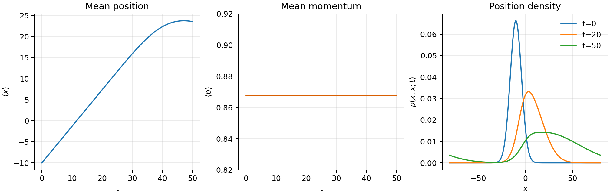
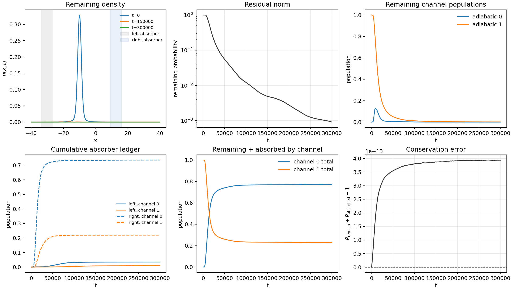

DVR Series - Part IV
Density-Matrix Ensemble Evolution
A single wavepacket is useful for visualizing dynamics. Thermal rate and correlation calculations need an ensemble. This note reorganizes the density-matrix workflow: thermal initialization, momentum filtering, multi-state propagation, and absorber-based population accounting.
Hilbert space and density matrix
The full space is a product of the nuclear DVR space and a finite electronic space:
The propagated object is the density matrix \(\rho(t)\), not a single wavefunction. This naturally supports thermal initial states and mixed incoming ensembles.
DVR and FFT operators
In the ensemble source note, the coordinate grid is uniform and the momentum operator is built through a discrete Fourier transform:
The FFT form is convenient for constructing thermal states and momentum filters on a uniform grid.
Thermal initialization
A harmonic reference Hamiltonian can define the incoming nuclear thermal state:
Diagonalizing \(H_{\mathrm{ho}}\) gives a stable way to evaluate the matrix exponential.
Positive-momentum filtering
To represent an incoming ensemble from left to right, the thermal density can be filtered in momentum space. The sharp version is
A smoother alternative is \(f(p)=\frac{1}{2}[1+\tanh(p/dp)]\). The filtered density is
Multi-state lift
The diabatic Hamiltonian is
On the product basis this is again
The source note also tracks local adiabatic populations by diagonalizing \(V(x_i)\) at each grid point and using the resulting local eigenvectors as projectors.
Time propagation
For a Hermitian Hamiltonian, the density matrix evolves as
which is the finite-dimensional form of the Liouville-von Neumann equation \(i\hbar\,d\rho/dt=[H,\rho]\). If no absorber is applied, this can also be evaluated directly at any time from \(H=C\,\mathrm{diag}(E_\alpha)C^\dagger\): the energy-basis density matrix gains phase factors \(e^{-i(E_\alpha-E_\beta)t/\hbar}\). The step notation appears here because the workflow interleaves unitary propagation with counting and mask operations.
For the published SAC benchmark, the filtered density is propagated in the equivalent low-rank form
so each \(|\psi_\alpha\rangle\) is propagated and masked while observables are accumulated with weight \(w_\alpha\). This avoids a large dense density-matrix multiply at every step while preserving the density-matrix ensemble interpretation for the linear population diagnostics used here.
Absorber bookkeeping
Instead of treating the final population as only what remains inside the numerical box, the source workflow records a ledger. A left keep-mask can be written as
and a right keep-mask as
The useful reported quantity is therefore
so transmitted, reflected, and still-inside probability are counted consistently.
Four core formulas
- Thermal state: \(\rho_{\mathrm{nuc}}=e^{-\beta H_{\mathrm{ho}}}/Z\).
- Full Hamiltonian: \(\hat H=\hat P^2/(2m)\otimes I+\sum_{ab}|a\rangle V_{ab}(\hat X)\langle b|\).
- Density propagation: \(\rho(t+\Delta t)=U\rho(t)U^\dagger\).
- Population ledger: remain plus left-absorbed plus right-absorbed probability.
Benchmarks
The first numerical check is a free-particle density-matrix propagation. After thermal initialization and positive-momentum filtering, the ensemble moves right while \(\langle p\rangle\) stays constant under the free Hamiltonian.

The multi-state benchmark uses the Tully simple avoided crossing model. A preliminary right-transmission-only diagnostic is not a final scattering result: it can keep slow and reflected components inside the box, so the transmitted curves need not have reached an asymptote. The corrected calculation uses a smooth right-moving momentum filter centered at \(p=0.45\) and width \(0.08\). The filtered density matrix is diagonalized into 20 weighted pure-state components, retaining \(0.999999999385\) of the density weight, and both left and right absorbers are included in the population ledger.

The next notes reuse this operator bookkeeping for equilibrium Kubo correlation functions.
Code used in this note
- dvr_ensemble_demo.py is a complete, executable density-matrix benchmark that regenerates the free-ensemble figure above.
- dvr_sac_ensemble_convergence.py regenerates the corrected Tully SAC convergence figure and prints the residual norm, outflow ledgers, conservation error, and late-window drift.
- dvr_kubo_minimal.py supplies the shared DVR Hamiltonian, Gaussian packet, and propagation utilities used in the surrounding notes.